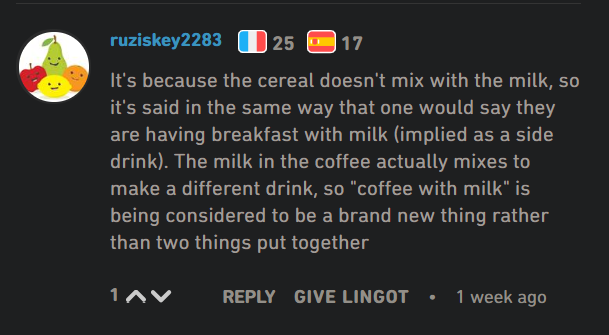

It's le café au lait and not le café avec du lait. Although the latter form is also perfectly acceptable. Also, it's les céréales avec du lait and not les céréales au lait. In this case the second form is forbidden as cereal and milk don't mix together. 